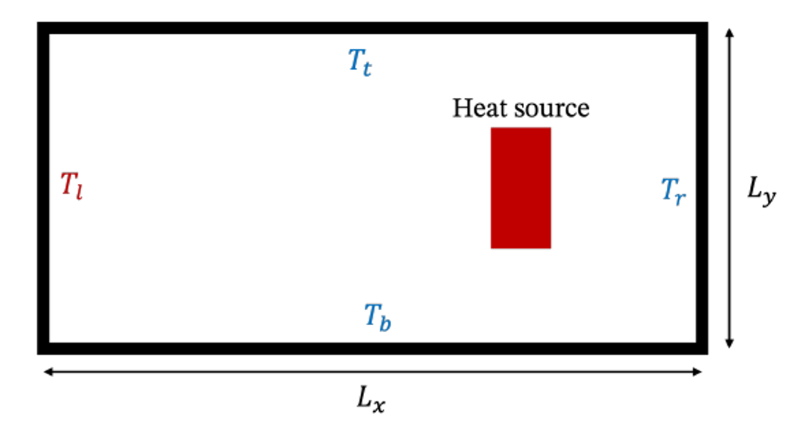
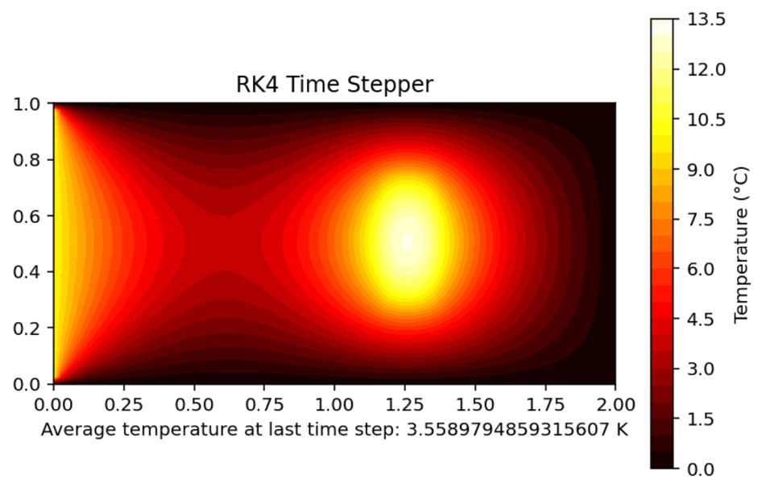

Heat Diffusion Simulation


Overview
- Developed a 2D transient heat diffusion simulation using Python
- Modeled temperature distribution across a rectangular domain over time
- Incorporated boundary conditions and an internal heat source to explore thermal behavior
Key Results
- Implemented a PDE solver using finite-difference methods
- Comapred and evaluated the tradeoffs between accuracy and stability for 3 time-stepping schemes
- Optimized location of internal heat source for highest average temperature
My Role
Modeling & Numerical methods
- Implemented an unsteady heat diffusion equation PDE solver using finite-difference methods (FDM)
- Used explicit time-stepping schemes such as Forward Euler, Heun, and Runge-Kutta 4th order (RK4)
- Calculatedheat flux at boundaries using forward and backward finite differencing
Analysis & Optimization
- Visualized steady-state temperature fields using Matplotlib
- Evaluated accuracy and convergence of the three time-stepping schemes
- Used optimization methods to identify the optimal placement of an internal heat source to maximize average domain temperature
Skills
Python
Numerical Methods
FEM
Finite Differences
Matplotlib
Numpy